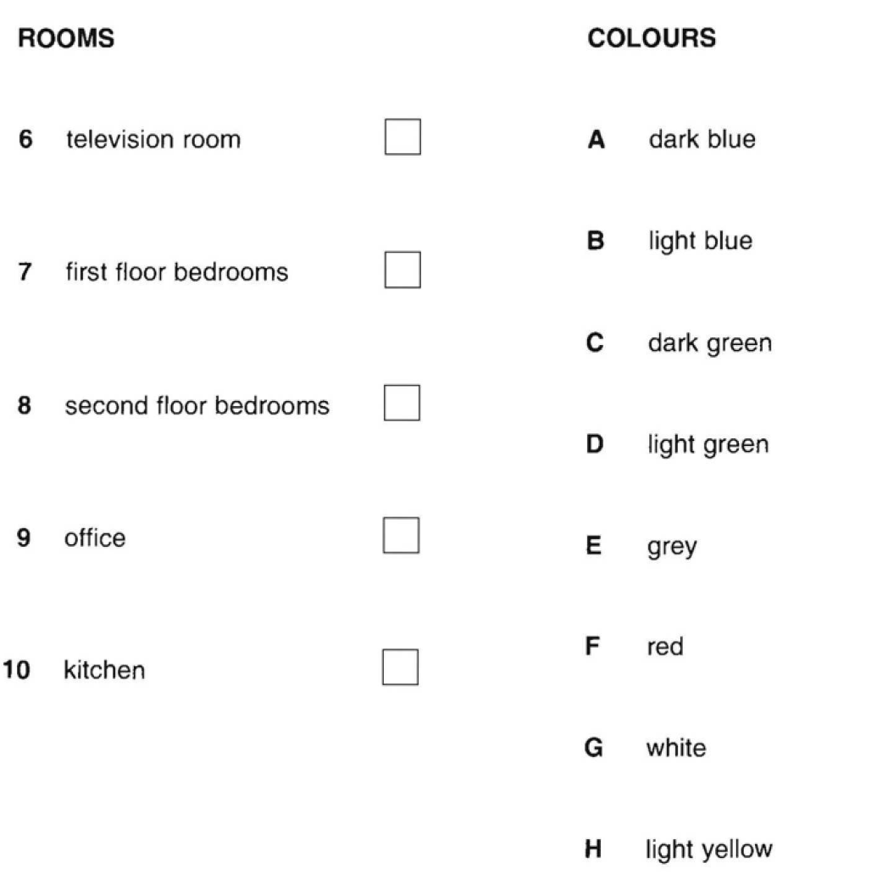
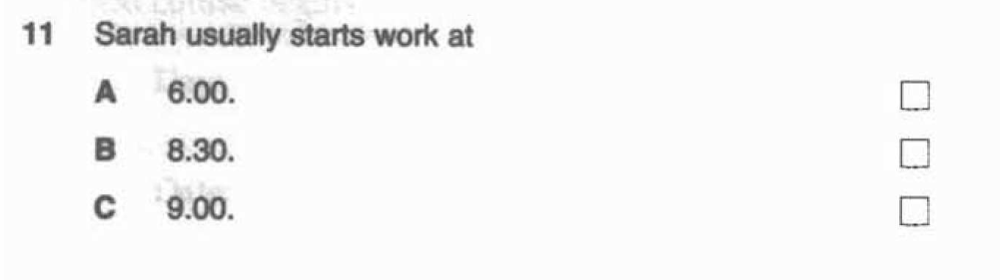
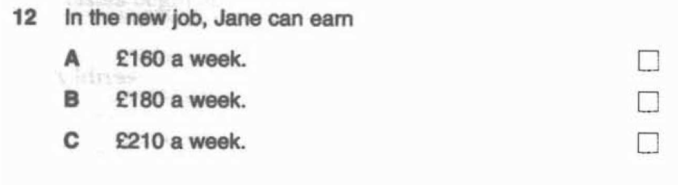
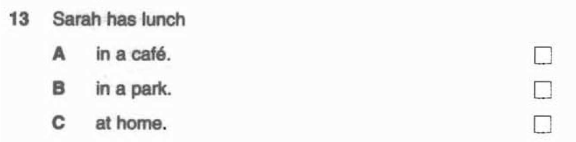
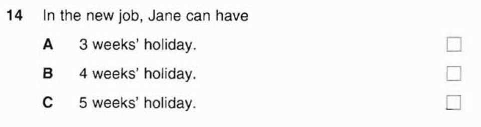
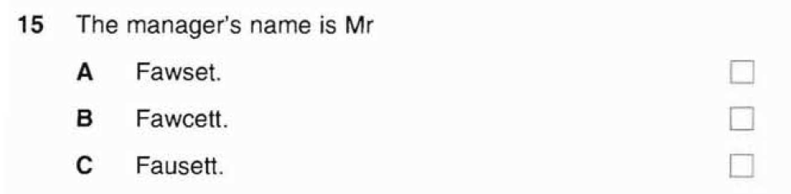
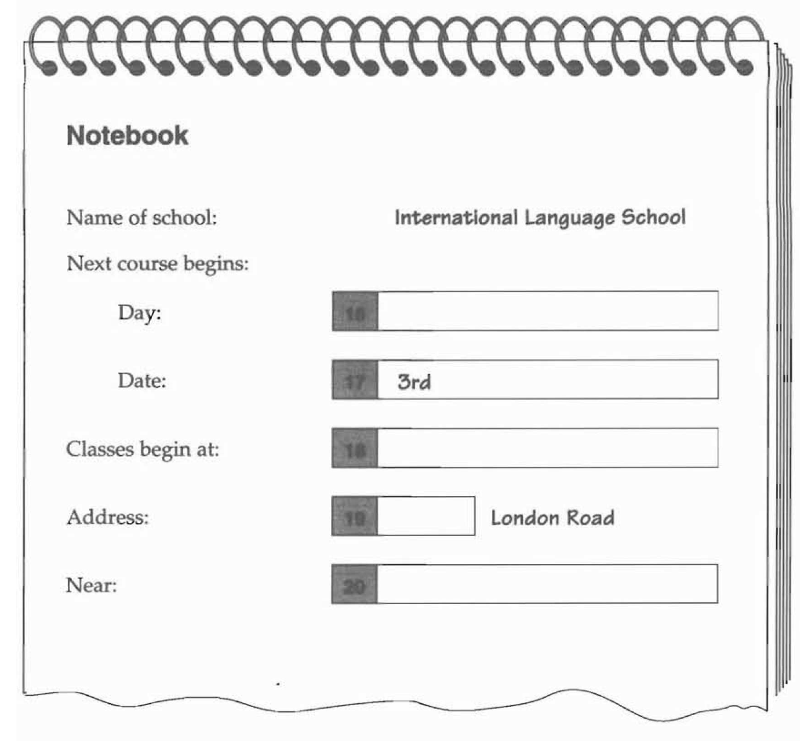
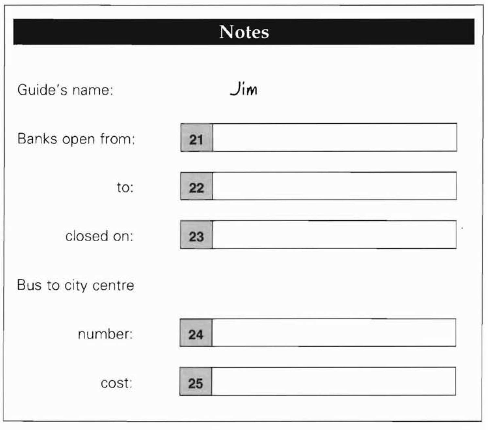

Listening Test 2
Complete all 25 questions. Explanations remain hidden until you submit the test.
Part 1 — Questions 1–5
You will hear each conversation twice.
There is one question for each conversation.
For questions 1–5, put a tick ✓ under the right answer.
1. What is John going to do tonight?
Paul: Hello Mrs Brown. Is John there? Mrs Brown: No, he's out on his bicycle at the moment. Paul: Oh. Can he go swimming tonight? Mrs Brown: Sorry, Paul, he's got a football match tonight.
“he's got a football match tonight.”
John is going to play football tonight, so the correct answer is C.
A (swimming) is only Paul's suggestion. B (bicycle) describes what John is doing at the moment, not what he is going to do tonight.
2. Which is Ben's family?
Female: Are you as tall as your sister, Ben? Ben: No, she's still taller than me. Female: And what about your brother? Ben: Oh, I'm much taller than him!
Ben's sister is taller than Ben, and Ben is taller than his brother.
Picture A matches the height order: sister tallest, Ben in the middle, brother shortest.
B does not match the required height order. C shows an extra family member and does not match the three-person description.
3. Which bag does the woman buy?
Female: I want to buy a present for Diana. Male: What about a bag? Female: Yes, this one's nice. It's small and round ... Male: I think she'd prefer a square bag. Female: No, this is better. I'll get the round one.
“I'll get the round one.”
The woman finally chooses the round bag, so C is correct.
A is the square/rectangular bag. B is another bag style, but it is not the final choice.
4. How much did the woman pay for the apples?
Male: Can I help you? Female: Yes, I'd like a pound of apples, please. Male: Do you want the ones at thirty pence, thirty-five pence or forty pence? Female: The ones at thirty pence please.
“The ones at thirty pence please.”
The woman chooses the 30p apples, so A is correct.
35p and 40p are mentioned only as alternatives.
5. What time does the film start?
Ray: Hello? Helen: Hello, Ray? It's Helen. About tonight ... Ray: Ah, yes. The film begins at quarter past eight. Helen: OK. So, I'll meet you outside the cinema at ... erm ... about five to eight. Ray: All right, see you then.
“The film begins at quarter past eight.”
Quarter past eight is 8:15, so A is correct.
Five to eight is the meeting time, not the film start time. The other clock is therefore a distractor.
Part 2 — Questions 6–10
They are going to paint the rooms.
What colour are they going to paint each room?
For questions 6–10, write a letter A–H next to each room.
You will hear the conversation twice.

6. television room
Michael: I'd like something brighter in the television room. What about red? Liz: Hm. I think it should be white, too. Michael: No, let's have something more interesting in the television room. Do you like yellow? Liz: Yes, a light yellow is all right.
“a light yellow is all right.”
The television room will be light yellow → H.
Red and white are suggested first but not chosen.
7. first floor bedrooms
Liz: Now, what about the bedrooms on the first floor? Michael: Well, the curtains are dark green, so I think the walls should be light green.
“the walls should be light green.”
First-floor bedrooms → light green → D.
Dark green describes the curtains, not the wall colour.
8. second floor bedrooms
Liz: Shall we have the same colour in the second floor bedrooms, too? Michael: No, something different. Perhaps grey ... Or is blue prettier? Liz: All right. A nice light blue on the second floor.
“A nice light blue on the second floor.”
Second-floor bedrooms → light blue → B.
Grey is considered but not selected. Dark blue is not chosen.
9. office
Michael: And for the office? How about red? Liz: Oh, no! That must be grey.
“That must be grey.”
The office will be grey → E.
Red is suggested but immediately rejected.
10. kitchen
Liz: You can have red in the kitchen. Michael: Fine! At least one room will be my favourite colour!
“You can have red in the kitchen.”
The kitchen will be red → F.
Other colours belong to other rooms.
Part 3 — Questions 11–15
For questions 11–15, tick ✓ A, B or C.
You will hear the conversation twice.

Jane: What time do you start in the morning? Sarah: At nine o'clock. You can catch the eight thirty train with me.
“At nine o'clock.”
Sarah usually starts work at 9:00 → C.
8:30 is the train time, not the work starting time. 6:00 is not stated.

Jane: OK, and what's the pay like? I got a hundred and eighty pounds a week in my last job. Sarah: Oh, you can earn more here. It's six pounds an hour, so that's about two hundred and ten pounds a week.
“about two hundred and ten pounds a week.”
The new job pays about £210 per week → C.
£180 was Jane's previous salary. £160 is not supported.

Jane: What do you do for lunch, Sarah? Do you take sandwiches? Sarah: No, we go to a little café near the park.
“we go to a little café near the park.”
Sarah has lunch in a café → A.
The park is only a location reference; she does not say they eat in the park or at home.

Jane: And how many weeks' holiday do you have? Sarah: Well, I have four weeks, some people have five, but when you start, Jane, you only have three.
“when you start, Jane, you only have three.”
Jane can have 3 weeks' holiday when she starts → A.
Four weeks is Sarah's allowance. Five weeks applies to some other employees.

Sarah: Yes, why not? His name's Mr Fawcett. Jane: What? Sarah: Fawcett. F-A-W-C-E-T-T.
“F-A-W-C-E-T-T.”
The spelling confirms Fawcett → B.
Fawset and Fausett are spelling distractors.
Part 4 — Questions 16–20
Listen and complete questions 16–20.
You will hear the conversation twice.

Female: Well, first, what day does the next course begin? Male: Well, our courses always begin on the first Monday of every month. Let me see, the next course begins on the third of January.
“our courses always begin on the first Monday of every month.”
The missing day is Monday.
January is the month for Question 17, not the day.
Male: The next course begins on the third of January.
“the third of January.”
The date already gives 3rd, so the missing word is January.
Monday belongs to Question 16.
Female: And what time do classes start? Male: Well, they begin at a quarter past nine so you should be here a little earlier, at about nine o'clock.
“they begin at a quarter past nine.”
Classes start at 9:15.
9:00 is the recommended arrival time, not the class starting time.
Female: And I don't have the address. Could you give it to me, please? Male: Yes, the school is at 57 London Road.
“the school is at 57 London Road.”
The missing house number is 57.
London Road is already printed on the form.
Female: Could you tell me where London Road is, please? Male: Yes, it's a long road and we're quite near the station.
“we're quite near the station.”
The school is near the station.
London Road is the address itself; the blank asks for a nearby landmark.
Part 5 — Questions 21–25
Listen and complete questions 21–25.
You will hear the information twice.

Guide: Firstly, the banks. They're open from nine thirty in the morning until four o'clock in the afternoon.
“open from nine thirty”
Banks open at 9:30.
4:00 is the closing time, used in Question 22.
Guide: They're open from nine thirty in the morning until four o'clock in the afternoon.
“until four o'clock in the afternoon.”
Banks close at 4:00.
9:30 is the opening time, used in Question 21.
Guide: They're open every day except Sunday. But on Sunday you can change money in the hotel.
“every day except Sunday.”
Banks are closed on Sunday.
The hotel can change money on Sunday, but the question is about the banks.
Guide: You can take a bus from the hotel to the city centre. It's the number twenty-one.
“It's the number twenty-one.”
The bus number is 21.
Fifteen refers to how often the buses run, not the bus number.
Guide: A ticket to the city centre costs sixty pence.
“costs sixty pence.”
The bus fare is 60p.
Other numbers in the talk refer to times, frequency, or the bus number.